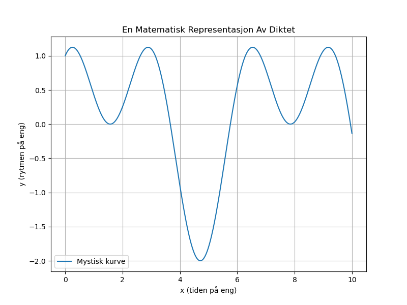

Dagens dikt
En mystisk kurve på en eng,
der matematikken danset strengt.
Som bølger den vinker, opp og ned,
en hemmelig rytme vi ikke kan fred.
Fra x som reiser til y sin sti,
vandre vi gjennom kurven, bli!
Et ekko av sinus, en klynge av kos,
her bringer vi sammen og lager et skjult fros.
La oss kode dette!

Kode
import numpy as np
import matplotlib.pyplot as plt
# Definer kurven basert på diktet
x = np.linspace(0, 10, 1000) # x-verdi fra 0 til 10
y = np.sin(x) + np.cos(2 * x) # Kombinasjon av sinus (vink) og kosinus (klynge)
# Plot kurven
plt.figure(figsize=(8, 6))
plt.plot(x, y, label='Mystisk kurve')
plt.title("En Matematisk Representasjon Av Diktet")
plt.xlabel("x (tiden på eng)")
plt.ylabel("y (rytmen på eng)")
plt.legend()
plt.grid(True)
plt.savefig('2025-03-20-20-01-46.png')